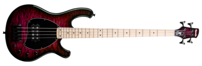

La basse est un instrument à cordes conçu de la même manière qu'une guitare, et qui peut être acoustique ou électrique.
Elle est présente dans tous les genres de musique. Elle apporte une fondation à la mélodie et dans un groupe, c'est un point de repère presque aussi indispensable que la batterie qui donne le rythme : si on ne sait plus où on est dans la chanson que l'on joue, on écoutes la ligne de basse et on peut se rattraper!
Et malgré l'importance que la basse a dans un groupe, on entends très peu parler du bassiste.
La basse n'est pas seulement utile aux membres du groupe : c'est aussi un instrument soliste qui se joue avec énormément de techniques différentes.
Il y a certaines techniques qui sont utilisées plus souvent, parmi lesquelles:
La technique la plus utilisée, elle consiste à faire comme un moonwalk avec ses doigts pour obtenir le son grave et rond classique de l'instrument.
On utilise un mediator pour que les cordes résonnent plus fort. On l'utilise surtout dans le rock.
On appuie directement sur les cases et cela produit le son. Cette technique est très difficile à apprendre et sert à jouer des morceaux très complexes. C'est plus simple d'apprendre le piano si cette technique est celle qui vous intéresse.
Le slap consiste sommairement à frapper d'un coup souple du poignet avec le pouce une corde grave puis de tirer avec l'index l'octave de la corde aiguë. Combiné à ce qu'on appelle des notes mortes (une note sans fréquence sonore qui sonne comme un coup sec), une nouvelle dimension vient s'ajouter à la mélodie. On peut aussi les mélanger avec d'autres techniques, mais c'est avec le slap qu'elles sonnent le mieux. Voici un exemple:
Un riff de slap sans notes mortes
Le même riff mais avec des notes mortes
C'est surtout cette technique qui m'a donné envie de jouer de la basse. Elle est utilisée principalement dans le funk et parfois le rap, mais c'est dans les solos qu'elle est la plus utilisée.
La basse est un instrument très polyvalent grâce à toute les techniques avec lesquelles on peut en jouer, mais elle est caché par la guitare : le bassiste a une réputation de guitariste raté, et l'instrument est délaissé par les musiciens qui hésitaient potentiellement entre les deux. Lorsque je voulais choisir quand j'ai eu l'idée de pratiquer un instrument de musique, j'ai bien failli prendre la guitare. D'après mon expérience, il est plutôt difficile d'apprendre à jouer de la basse. la prise en main est facile, mais la complexité de l'apprentissage des techniques et du solfège est dure. Malgré tout ça, c'est quand même un instrument très amusant à jouer, et qui me donne envie de déployer du temps et des efforts pour y devenir meilleur.
Voici ici quelques bassistes qui valent le coup d'oeil!